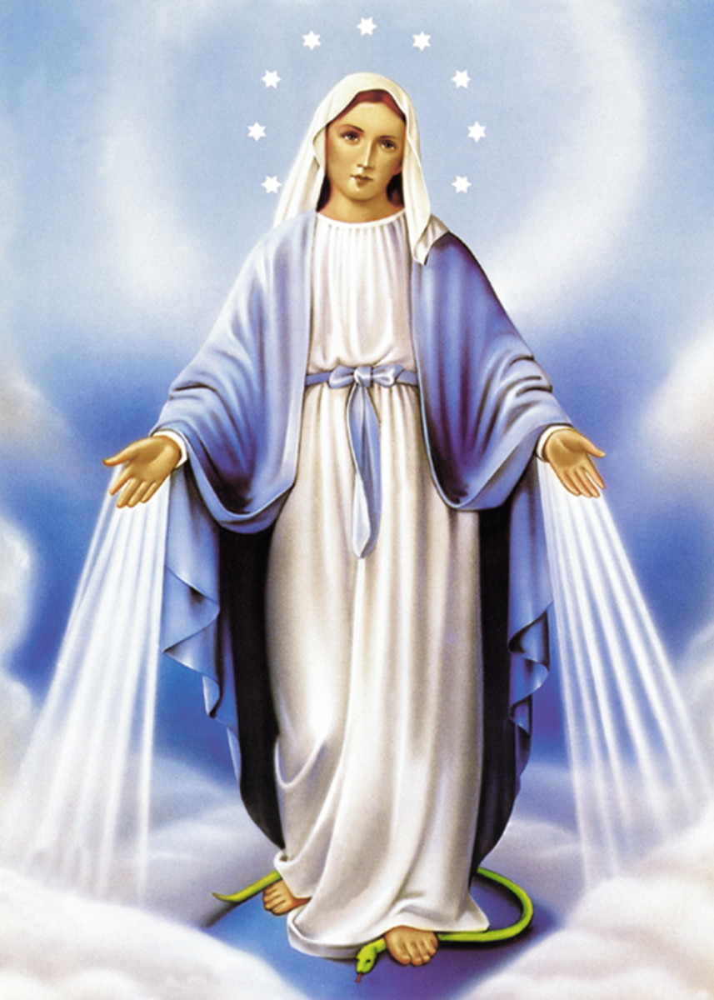
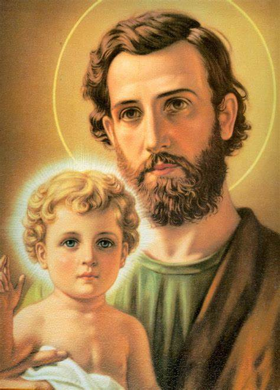
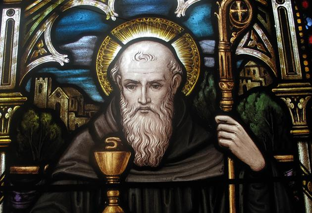
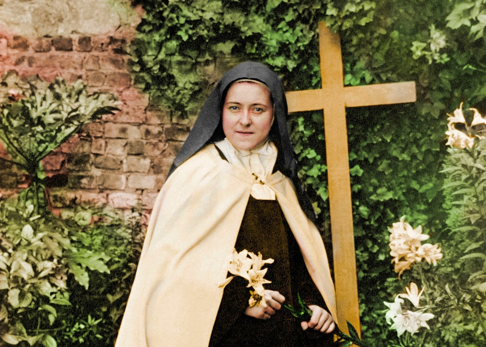

História dos Santos da Igreja Católica
Nossa Senhora das Graças

A história de Nossa Senhora das Graças
Santa Catarina Labouré
A história de Nossa Senhora das Graças remonta ao início do século XIX.
Em 1806, a Providência fazia nascer na região da Borgonha, na França, uma menina destinada a representar um imenso papel em seu tempo e nos séculos futuros. Talvez, até o fim do mundo, Catarina Labouré.
Quando tinha nove anos perdeu sua mãe, senhora de origem distinta ligada a pequena nobreza de Fain-les-Moutiers. Todas em lágrimas, sobe ela então em um móvel, e declara, abraçando uma imagem da Virgem: “Agora vós sereis minha Mãe”. E Maria Santíssima, correspondendo a tanto afeto por Ela mesmo inspirado tornou-se de modo especial mãe de Catarina.
Certa vez, um sonho deixou-a intrigada: após celebrar missa na igrejinha de Fain-les-Moutiers, um velho e desconhecido padre, cujo olhar muito a impressionara, faz-lhe um sinal para que se aproxime. Tomada pelo temor, ela recua, mas sempre fascinada por aquele olhar. O velho padre lhe diz: “Minha filha, tu agora me foges, mas um dia serás feliz em vir a mim. Deus tem desígnios sobre ti. Não o esqueças…”.
Aos dezoito anos, uma enorme surpresa: ao visitar o convento das Filhas da Caridade em Châtillon-sur-Seine, onde fora estudar com uma prima, depara-se com um quadro que retratava o mesmo ancião de cujo olhar jamais se esquecera: era, nada mais nada menos, São Vicente de Paulo, fundador das Filhas da Caridade, que confirmava e indicava assim a vocação religiosa de Catarina. Entretanto, foi só aos 23 anos, que superando todos os obstáculos familiares que procuravam impedi-la de seguir os caminhos que Deus lhe traçara.
Três meses depois, no dia 21 de abril de 1830, transpôs pela primeira vez os umbrais do noviciado das Filhas da Caridade, em Paris, na Rue du Bac.
A primeira apariçãoNa noite anterior ao dia da festa de São Vicente, 19 de julho, o céu e a terra se tocariam. Quem conta é a própria Santa Catarina:
“Haviam-nos distribuído as noviças um pedaço de roquete de linho de São Vicente. ‘Eu cortei a metade e o engoli, adormecendo com a ideia de que São Vicente me obteria a graça de ver a Santíssima Virgem. Enfim, às onze e meia da noite, ouvi que me chamavam pelo nome: ‘Irmã Labouré, Irmã Labouré!’
Acordando, corri a cortina (que envolvia meu leito) e vi um menino de quatro ou cinco anos, vestido de branco, que me disse: ‘Venha para a Capela! A Santíssima Virgem te espera!’
Eu me vesti depressa e me dirigi para o lado do menino, que ficara de pé. Eu o segui. Ele estava sempre à minha esquerda. Por todos os lugares onde passávamos as luzes (as velas) estavam acesas. O que me deixou muito espantada. Mais surpresa ainda fiquei ao chegar à capela. O menino tocou apenas com a ponta do dedo e a porta se abriu! Minha surpresa foi muito maior porque vi que todas as velas e castiçais estavam acesos como se fosse missa de meia-noite.
Afinal, quando chegou a hora, o menino me avisou: Olhe! É a Santíssima Virgem! Ei-la!
Ouvi então um ruído como o ‘fru-fru’ de um vestido de seda que partia do lado direito do altar. Em seguida, vi uma senhora de extraordinária beleza sentar-se na cadeira que o diretor da comunidade costumava utilizar e que fica do lado esquerdo.”
Seguindo o impulso de seu coração, Catarina pôs-se bem junto à Santíssima Virgem, apoiando suas mãos sobre os joelhos de Nossa Senhora, como teria feito com sua mãe… “Ali se passou o momento mais doce de minha vida. Seria impossível exprimir tudo o que senti. Ela me disse: Minha filha, quero encarregar-vos de uma missão. Tereis muito que sofrer, mas vós superareis esses sofrimentos pensando que o fareis para a glória do bom Deus. Sereis contraditada, mas tereis a graça, não temais! Sereis inspirada em vossas orações….
Revelações da Santíssima VirgemNossa Senhora continuou seu diálogo com aquela filha mostrando o que aguardava a França.
Os tempos são muito maus, calamidades virão precipitar-se sobre a França. O trono será derrubado. O mundo inteiro será transtornado por males de toda ordem. Mas vinde ao pé deste altar: aí as graças serão derramadas,… sobre todas as pessoas, grandes e pequenas, particularmente sobre aqueles que as pedirem… O perigo será grande, entretanto, não temais, o bom Deus e São Vicente protegerão a comunidade.”
Nossa Senhora ainda disse: “Haverá vítimas… as ruas estarão cheias de sangue… Minha filha, a Cruz será desprezada e derrubada por terra. O sangue correrá. Abrir-se-á de novo lado de Nosso Senhor. As ruas estarão cheias de sangue. O Arcebispo, será despojado de suas vestes (aqui a Santíssima Virgem não podia mais falar; o sofrimento estava estampado em suas faces). Minha filha – me dizia Ela – o mundo todo estará na tristeza. A estas palavras, pensei quando isto se daria. Eu compreendi muito bem: quarenta anos.”
De fato, quatro décadas depois, a França e Alemanha entravam em guerra…
Graças sobre o mundoOutras aparições se seguiram, onde Nossa Senhora pediu que a santa cunhasse a Famosa Medalha Milagrosa, ao passo que trataremos em outro artigo. Uma coisa marcante nesta visita da Mãe de Deus são seus braços abertos e os raios de luz que saiam, segundo Santa Catarina, dos anéis da Virgem Maria.
Dizia Nossa Senhora: “Os raios são o símbolo das Graças que derramo sobre as pessoas que Me as pedem. Os raios mais espessos correspondem às graças que as pessoas se recordam de pedir. Os raios mais finos correspondem às graças que as pessoas não se lembram de pedir. Tenho muitas e muitas graças para dar à humanidade, mas as pessoas não mas pedem.”
A Virgem então queixou-se que seus filhos não pediam. Grande dor para uma Mãe é o fato de seu filho nunca lhe pedir nada. Por esta razão, Nossa Senhora das Graças abre seus braços, para abraçar profundamente seus filhos que correm até ela para pedirem ajuda! Você já pediu alguma graça?
Voltar ao topoSão José

HISTÓRIA DE SÃO JOSÉ
São José é descendente da casa real de Davi. É o esposo da Virgem Maria e pai adotivo de Jesus Cristo. Nos Evangelhos ele aparece na infância de Jesus. Pode-se ver as citações nos livros de Mateus Capítulos 1 e 2, e em Lucas 1 e2. Na Bíblia, São José é apresentado como um justo. Mateus, em seu Evangelho, descreve a história sob o ponto de vista de José. Já Lucas narra o tempo de infância do menino Jesus contando com a presença de José.
São José na História da SalvaçãoSão José estava noivo de Maria e, ao saber que ela estava grávida, decidiu abandoná-la, pois o filho não era dele. Ele pensa em abandoná-la para que ela não fosse punida com a morte por apedrejamento
Mas ele teve um sonho com um anjo que lhe disse que Maria ficou grávida pela ação do Espírito Santo, e que o menino que iria nascer era Filho de Deus, então, ele aceitou Maria como esposa. Perto do tempo previsto do nascimento de Jesus, por um decreto romano ele foi para Belém partir do recenseamento, lá Maria deu à luz ao Menino Jesus e José estava presente no nascimento.
O anjo, porém, deu novo aviso a José, em sonho. Com efeito, o anjo avisou a José que Herodes queria matar o menino Jesus e mandou-o pegar o menino e sua mãe e fugir para o Egito com eles. José obedeceu. Assim, A sagrada família foi para o Egito e viveram lá durante quatro anos. Após este tempo, o anjo avisou novamente a José em sonhos, dizendo que eles poderiam voltar para Nazaré porque Herodes tinha morrido. José obedeceu e levou a Sagrada Família novamente para Israel.
Vida SimplesSão José devotou sua vida aos cuidados de Jesus e Maria. Vivendo do trabalho de suas mãos, como carpinteiro, sustentou sua família com dignidade e exemplo. A profissão de carpinteiro propiciava dignidade à família. José era um judeu religioso e praticante. Ele consagrou o menino Jesus no Templo, logo depois que o menino nasceu. Este ato só era praticado na época por judeus piedosos. São José levava sua família regularmente às peregrinações de seu povo em Jerusalém, como, por exemplo, na Páscoa. Foi numa dessas peregrinações em que, na volta para Nazaré, o menino Jesus ficou em Jerusalém conversando com os doutores da lei. O menino tinha, então, doze anos. José e Maria, aflitos, voltam ao templo e encontram o menino Jesus debatendo com os doutores da lei. Nesta ocasião, Jesus afirma que “Tinha que cuidar das coisas de seu Pai”. Esta é a última vez que José é mencionado nas Sagradas Escrituras. Todos os indícios levam a crer que José faleceu antes de Jesus começar sua vida pública. Caso contrário, ele certamente teria sido mencionado pelos evangelistas, como o foi Maria.
Influência de José na formação da personalidade de JesusSão José teve papel importantíssimo na formação da personalidade de Jesus enquanto pessoa humana. Claro, Jesus é o Filho de Deus. Porém, se analisarmos o comportamento de Jesus do ponto de vista humano, veremos que ele (Jesus) foi um menino e um homem que teve um pai presente, piedoso e influente. Um pai que ensinou ao filho o caminho da justiça, da verdade, do amor e do conhecimento da Palavra de Deus. Não é à toa que São José é chamado de “Justo” desde os Evangelhos. Por isso, São José é um dos maiores santos de todos os tempos.
Devoção a São JoséSão José foi inserido no calendário litúrgico Romano em 1479. Sua festa é celebrada no dia 19 de março. São Francisco de Assis e, mais tarde, Santa Teresa d’Ávila, foram grandes santos que ajudaram a divulgar a devoção a São José. No ano de 1870, São José foi declarado oficialmente como o Patrono Universal da Igreja. O autor desta declaração foi o Papa Pio IX. No ano de 1889, o Papa Leão XIII, num de seus grandes documentos,exaltou as virtudes deSão José. O Papa Bento XV declarou São José como o patrono da justiça social. Para ressaltar a grande qualidade e poder de intercessão de São José como “trabalhador”, O Papa Pio XII instituiu uma segunda festa em homenagem a ele, a festa de "São José operário". Esta, acontece no dia primeiro de maio.
São José é invocadotambémcomo o padroeiro dos carpinteiros. Na arte cristã ele é representadotendo um lírio na mão, representando a vitória dos santos. Algumas vezes ele aparece também com o menino Jesus ou nos braços, ou ensinando a Ele a profissão de carpinteiro.
Revelações sobreo poder de intercessão de São José
São José é, sem dúvida, uma dos santos mais importantes da Igreja. Ele é invocado como o santo que intercede a Deus por todas as nossas necessidades. São José tem, diante de Deus, privilégios únicos. Esta é uma das revelações que foram dadas à Serva de Deus chamada Santa Águeda:“Por sua intercessão alcançamos a virtude da castidade e a vitória sobre as tentações contra pureza; alcançamos o poderoso auxílio da graça para sair do pecado e voltar à amizade com Deus; alcançamos a benevolência da Santíssima Virgem Maria e a verdadeira devoção a ela; alcançamos a graça de uma boa morte e a especial proteção contra o demônio nesta hora.” A Igreja afirma que os espíritos do mal estremecem quando ouvem o nome de São José ser invocado. Pela intercessão de São José, podemos alcançar a saúde e a ajuda nas dificuldades. Através dele, as famílias podem alcançar a bênção de uma vida digna.
Nossa Senhora também revelou a Santa Águeda: "Os homens ignoram os privilégios que o Senhor concedeu a São José, e quanto pode sua intercessão junto de Deus. Somente no dia do Juízo os homens conhecerão sua excelsa santidade e chorarão amargamente por não haverem se aproveitado desse meio tão poderoso e eficaz para sua salvação e alcançar as graças de que necessitavam". SJMJ
Oração a São JoséA vós, S. José, recorremos em nossa tribulação e, depois de ter implorado o auxílio de Vossa Santíssima Esposa, cheios de confiança solicitamos também o Vosso patrocínio. Por este laço sagrado de caridade que Vos uniu à Virgem Imaculada Mãe de Deus, e pelo amor paternal que tivestes ao Menino Jesus, ardentemente Vos suplicamos que lanceis um olhar benigno para a herança que Jesus Cristo conquistou com seu Sangue, e nos socorrais em nossas necessidades com o Vosso auxílio e poder. Protegei, ó Guarda providente da Divina Família, a raça eleita de Jesus Cristo. Afastai para longe de nós, ó Pai amantíssimo, a peste do erro e do vício. Assisti-nos do alto do céu, ó nosso fortíssimo sustentáculo, na luta contra o poder das trevas; e assim como outrora salvastes da morte a vida ameaçada do Menino Jesus, assim também defendei agora a Santa Igreja de Deus contra as ciladas de seus inimigos e contra toda adversidade. Amparai a cada um de nós com o Vosso constante patrocínio a fim de que, a Vosso exemplo e sustentados por Vosso auxílio, possamos viver virtuosamente, morrer piedosamente e obter no céu a eterna bem-aventurança. Amém.
Voltar ao topoSão Bento

HISTÓRIA DE SÃO BENTO
São Bento nasceu na Umbria, Itália, no ano de 480. Era de família nobre romana. Desde pequeno manifestou um gosto especial pela oração. Realizou os primeiros estudos na região de Nurcia, próximo à cidade de Spoleto. Depois foi morar em Roma para estudar filosofia.
Vida de São Bento Um eremita chamado Romano encontrou Bento e lhe deu um hábito de monge. Romano ensinou a São Bento tudo sobre a vida de eremita e levando-o para uma gruta escondida, (gruta santa), no monte de Subíaco. Lá, o jovem Bento aprofundava-se na vida de eremita e Romano o ajudava regularmente com alimentos.São Bento ficou ali por 3 anos só em orações e estudos, sem receber visitas. Um dia, porém, um sacerdote da região, fazendo seu jantar, ouviu uma voz dizendo: estás fazendo seu jantar enquanto meu servo Bento morre de fome no deserto. O sacerdote, com muito esforço, partiu para o deserto, encontrou a gruta em que Bento estava escondido e após uma oração, disse que era o dia da Páscoa do Senhor e serviu-lhe a comida. Tempos depois o jovem bento foi descoberto por pastores e assim passou a receber muitas visitas para conselhos e orações. Logo sua fama começou a crescer e ele passou a ser visitado por mais e mais pessoas em busca de aconselhamentos e orações.
Tentativa de assassinatoPor causa de sua fama de santidade, São Bento foi chamado para ser o abade (superior) do convento de Vicovaro. Ele aceitou, desejando prestar um serviço. Porém, não combinou com a vida que os monges viviam, porque não era incondicional como ele achava que deveria ser o seguimento de Cristo. Foi se formando entre os religiosos uma antipatia contra o santo, chegando ao cúmulo de tentarem matá-lo com veneno, mas, abençoando a taça de vinho envenenada, como fazia com todos os alimentos que comia, ela se quebrou. Assim, bento disse em seguida que Deus perdoe a vocês, meus irmãos. Depois disso, abandonou o convento e voltou para Subíaco.
A primeira ordem monástica da históriaSão Bento fundou em poucos anos doze mosteiros. Antes de Bento, os monges viviam como eremitas, isolados, sozinhos. São Bento organizou a vida monástica comunitária e os mosteiros começaram a florescer. Todos eles seguiam a famosa Regra de São Bento. As famílias nobres de Roma começaram a mandar seus filhos para estudarem nos mosteiros fundados por São Bento. Santo Plácido e São Mauro estavam entre os educandos de São Bento.
A Regra de São BentoA Regra de São Bento (Regula Monasteriorum) é um livro escrito por São Bento, com as regras para a vida monástica comunitária. É um livro com 73 capítulos curtos. A regra prioriza o silêncio, a oração, o trabalho, o recolhimento, a caridade fraterna e a obediência. Assim nascia a famosa Ordem dos Beneditinos, ou Ordem de São Bento, que permanece viva e atuante até hoje, seguindo a mesma regra escrita há mais de 1500 anos. A Regra de São Bento foi também adaptada para várias congregações de monges do ocidente.
Milagres de São BentoNo Monte Cassino, Itália, Bento começou a pregar o Evangelho para o povo. Com a pregação e os inúmeros milagres que fazia, inclusive vários exorcismos, o povo começou a se converter. Assim, o povo de Monte Cassino derrubou o templo de Apolo, que fora construído no cume do monte e com suas ruínas construíram dois conventos com as bênçãos de São João Batista e São Martinho. Esta foi a origem do grande mosteiro de Monte Cassino, criado em 529, com a bênção do Papa Felix lll.
Devoção a São BentoSão Bento morreu no ano de 547, aos 67 anos. Predisse sua morte no mesmo ano da morte de sua irmã Santa Escolástica, fundadora do ramo feminino da ordem de São Bento. Mandou abrir sua própria sepultura e depois de falar aos monges, de pé com as mãos para o céu, morreu. Parte de suas relíquias estão no Mosteiro de Monte Cassino e outras na abadia de Fleury, na França. São Bento foi canonizado no ano de 1220 e sua festa é comemorada no dia 11 de julho. Sua imagem é representada com o livro das regras; um sino, que representa a voz de Deus; um copo quebrado e a serpente representando o veneno; um corvo com um pedaço de pão no bico representando o tempo em que ele passou no deserto e uma vara representando a disciplina.
Medalha de São Bento e sua mensagem A medalha de São Bento foi esculpida primeiramente nas colunas do mosteiro de Monte Cassino. Na frente da medalha lê-se: Ejus in ibitu nostro praesentia muniamur. Sejamos protegidos pela sua presença na hora da nossa morte.No verso encontra-se as seguintes inscrições:
CSPB - Crux Sancti Patris Benedicti - (cruz do Santo Pai Bento)
CSSML - Crux Sacra Sit Mihi Lux - (a Cruz Sagrada Seja a minha Luz)
NDSMD - Non Draco Sit Mihi Dux - (não seja o Dragão o meu guia)
VRS - Vade Retro Satana - (para traz satanás)
NSMV - Nunquam Suade Mihi Vana - (Nunca Seduzas minha alma)
SMQL - Sunt Mola Quae Libas - (são coisas más que brindas)
IVB - Ipse Venana Bibas - (Bebas do mesmo veneno)
Oração a São Bento
A Cruz sagrada seja a minha Luz. Não seja o dragão o meu guia. Retira-te satanás. Nunca me aconselhe coisas vãs. É do mal o que tu me oferece. Beba tu mesmo do teu veneno. Rogai por nós Bem Aventurado São Bento, para que sejamos dignos das promessas de Cristo.
Voltar ao topoSanta Teresinha do Menino Jesus

HISTÓRIA DE SANTA TEREZINHA
Santa Tereza do Menino Jesus nasceu no dia 2 de janeiro de 1873 em Alençom, baixa Normandia, na França. Desde o nascimento foi fraca e doente. Seu nome de batismo era Marie Françoise Thérèse Martin (Maria Francisca Tereza Martin). Filha de Louis Martim, relojoeiro e joalheiro, que quis ser monge na ordem de São Bernardo de Claraval, e Zélie Guérin, famosa bordadeira do ponto de Alençon.
Sua mãe faleceu quando Terezinha tinha apenas quatro anos. Por isso, a menina se apegou à sua irmã mais velha, Paulina, que passou a ser tida por ela como segunda mãe. Paulina, porém, seguindo a própria vocação, entrou para o Carmelo. Terezinha ficou muito doente causando grande preocupação em seu pai e irmãs. Um dia, porém, olhando para a imagem da Imaculada Conceição de Maria, de quem seus pais eram devotos, a Virgem sorriu para Terezinha e esta ficou curada. Desse dia em diante, Terezinha decidiu entrar para o Carmelo. Suas irmãs, que também se tornaram freiras, eram Maria, Paulina, Leônia e Celina. Seus 3 irmãos morreram muito cedo. Terezinha estudou no colégio da Abadia das monjas beneditinas de Lisieux por 5 anos.
A vida de Santa Tereza do Menino JesusSanta Terezinha estava decidida a entrar para a ordem das carmelitas descalças, mas como tinha apenas 14 anos, não poderia, por causa das regras da Igreja. Mas ela não desistiu. Numa viagem feita à Itália, teve a audácia de pedir autorização ao Papa Leão Xlll e este concedeu. Assim, em abril de 1888 ela entra para o Carmelo com o nome de Thérèse de I’Enfant Jesus (Tereza do Menino Jesus). Fez sua profissão religiosa em setembro de 1890, festa da Natividade da Virgem Maria, acrescentando em seu nome, Thérèse de I’Enfant Jesus Et de La Sainte Face, (Tereza do Menino Jesus e Sagrada Face).
Vida de santidadeSanta Terezinha levou a sério o caminho da perfeição escrito por sua fundadora Santa Tereza de Jesus (Santa Tereza D’Ávila). Porém, Terezinha revelou ao mundo que a perfeição e a santidade podem estar nas pequenas coisas, nos pequenos gestos e obrigações cotidianas que fazemos com amor. Ela dizia: Sigamos o caminho da simplicidade. Entreguemo-nos com todo o nosso ser ao amor. Em tudo busquemos fazer a vontade de Deus. O zelo pela salvação das pessoas devore nosso coração.
O Legado de Santa Tereza do Menino Jesus Santa Terezinha escreveu três manuscritos a pedido de sua irmã Paulina. Esses manuscritos são sua autobiografia e foram publicados em 1898 com o título de História de uma Alma, livro que, posteriormente, veio a se tornar um dos maiores best sellers da história.
Em seus escritos, Terezinha ensina a teologia profunda da simplicidade: a pequena via. Um caminho de santidade baseado nas pequenas coisas, nos pequenos atos do cotidiano que, quando feitos com amor, produzem frutos de santidade. Ela dizia que não tinha forças para fazer as grandes obras heróicas dos santos famosos da Igreja, mas só conseguia fazer pequenas coisas. Mas nessas pequenas coisas estava o segredo de sua santidade. Pegar um alfinete caído no chão, com amor, produz fruto de santidade.
Missionária sem nunca sair do Carmelo Santa Tereza do Menino Jesus se tornou a padroeira das missões sem nunca ter saído do Carmelo. Ela dizia: Compreendi que a igreja tinha um Coração, e que este coração ardia de Amor. Compreendi que só o Amor fazia os membros da igreja agirem, que se o Amor viesse a se apagar, os Apóstolos não anunciariam mais o Evangelho, os Mártires se recusariam a derramar seu sangue... Por isso, ela dizia: No coração da Igreja, serei o amor. Dizia sempre que o que conta é o amor, só o amor. É contemplar no outro a pessoa de Jesus. Para ela ser missionário não é uma questão de geografia e sim uma questão de amor.
Santa Tereza do Menino Jesus, a Santa das Rosas Santa Terezinha ficava feliz quando jogava pétalas de rosas ao ver passar o Santíssimo Sacramento no ostensório, e também gostava de jogar flores no grande crucifixo que ficava no jardim do Carmelo. Disse antes de morrer: Vou fazer chover sobre o mundo uma chuva de rosas, dizendo assim que iria interceder a Deus, sempre por todos os povos. Por isso, na Novena de Santa Terezinha o fiel espera receber uma rosa como sinal de que seu pedido será atendido.
Falecimento de Santa TerezinhaSanta Tereza do Menino Jesus sofreu por quase 3 anos de tuberculose, que, naquela época não tinha cura. Chegou a dizer que jamais pensou que fosse capaz de sofrer tanto, mas teve paciência e fez tudo por amor, sem jamais reclamar nem murmurar. Faleceu no dia 30 de setembro de 1897, aos 24 anos. No leito de morte as monjas rezavam e anotavam tudo que ela dizia. Sua última frase foi: Não me arrependo de haver-me entregue ao amor. E com o olhar fixo no crucifixo exclamou: Meu Deus, eu te amo. Então, faleceu a jovem que depois foi chamada de a Maior Santa dos tempos modernos.
Devoção a Santa Tereza do Menino JesusAntes de ser canonizada Santa Tereza do Menino Jesus foi beatificada em abril de 1923. Sua canonização foi feita pelo Papa Pio Xl, em 1925 no dia 17 de maio. No ano de 1927 foi declarada Patrona Universal das Missões Católicas. Foi nomeada Padroeira Secundária da França, junto com Santa Joana D’arc. Em 1997 no centenário de sua morte, o Papa João Paulo ll, na Carta Apostólica, Divinis Amoris Scientia, a declara Doutora da Igreja por causa da sua mensagem da Infância Espiritual e da Contemplação da Face de Cristo. Seus pais, Luis Martin e Zélia Guerin, foram beatificados pela Igreja, no ano de 2008, no dia Mundial das Missões, na basílica de Lisieux, dedicada a Santa Terezinha.
Oração a Santa Tereza do Menino JesusÓ Santa Terezinha, branca e mimosa flor de Jesus e Maria, que embalsamais o Carmelo e o mundo inteiro com vosso suave perfume, chamai-nos e nós correremos convosco, ao encontro de Jesus, pelo caminho da renúncia, do abandono e do amor. Fazei-nos simples e dóceis, humildes e confiantes para nosso Pai do céu. Não permitais que o ofendamos com o pecado. Socorrei-nos em todos os perigos e necessidades; socorrei-nos em todas as aflições e alcançai-nos todas as graças espirituais e temporais, especialmente a graça que estamos precisando agora, (fazer o pedido). Lembrai-vos ó Santa Terezinha, que prometestes passar vosso céu fazendo o bem a terra, sem descanso, até ver completo o numero de eleitos. Cumpri em nós vossa promessa: sede nosso anjo protetor na travessia desta vida e não descanseis até que nos vejais no céu, ao vosso lado, contando as ternuras do amor misericordioso do Coração de Jesus. Amém.
Voltar ao topo